Recipes
Bacon Marmalade Burgers
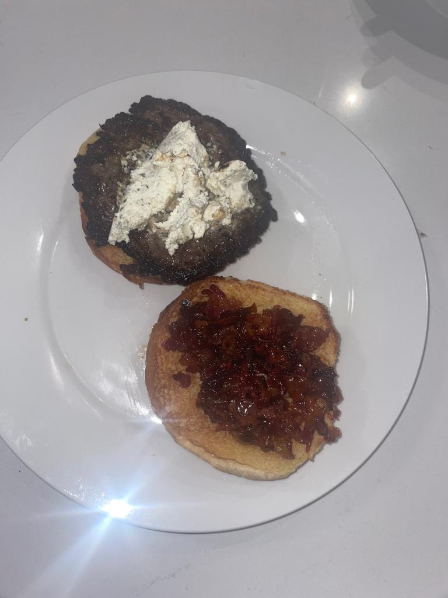
Ingredients
- \(2\) lbs ground beef, portioned into \(8\) burgers and seasoned with salt and pepper
- \(1\) lb thick cut bacon
- \(1\) sweet onion, slivered
- \(\frac{1}{2}\) cup brown sugar
- \(8\) sesame seed buns
- \(1\) pkg Alouette cheese spread
Directions
- Cut bacon into small pieces and cook in a skillet over medium-high heat until crispy (about \(8\) minutes).
- Remove bacon from skillet, but leave \(2\) tbsp of bacon grease in the pan to cook the onions. Add slivered onions to the same skillet and cook for \(8\) minutes.
- Reduce the heat to low so the onions can caramelize. Add \(\frac{1}{2}\) cup brown sugar and continue to cook them until they completely caramelize (about \(20\) minutes).
- Add the bacon bits back into the caramelized onions.
- Smash each burger portion very thin (I use the underside of a pan) and cook for about \(1\frac{1}{2}\) minutes per side.
- Serve by putting a burger on a toasted bun and adding bacon marmalade and alouette cheese spread.
Baklava
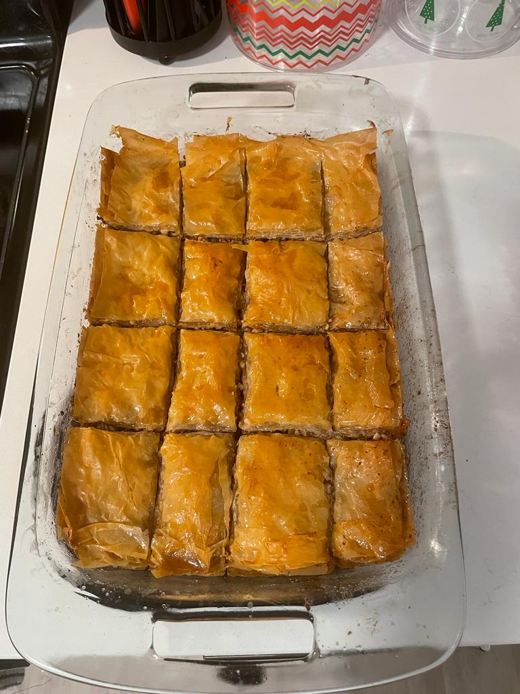
Ingredients
- \(1\) package of frozen phyllo dough
- \(3\) sticks unsalted butter, melted
Filling
- \(2\frac{3}{4}\) cups walnuts, crushed
- \(1\) tbsp cinnamon
- \(1\) tsp allspice
- \(\frac{1}{4}\) tsp nutmeg
Syrup
- \(\frac{1}{2}\) cup white sugar
- \(1\) cup water
- \(\frac{1}{2}\) tsp salt
- \(1\) cup honey
Directions
- Preheat oven to \(400^\circ F\).
- Brush the bottom of a \(9 \times 13\) inch baking dish with melted butter.
- Make the filling by mixing \(2\frac{3}{4}\) cups walnuts, \(1\) tbsp cinnamon, \(1\) tsp allspice, and \(\frac{1}{4}\) tsp nutmeg until thoroughly combined.
- Add \(1\) sheet of phyllo dough to the baking dish and brush the top of it with butter. Repeat this until there are \(14\) sheets of dough stacked on top of each other.
- Add the walnut filling on top of the \(14^{\text{th}}\) sheet of dough. Add a little bit of butter on top of the filling.
- Add \(14\) more sheets of phyllo dough on top of the filling, and brush each with butter.
- Cut into rectangles.
- Bake for \(30-35\) minutes.
- While the baklava is in the oven, heat a saucepan over medium high heat.
- To the saucepan, add \(\frac{1}{2}\) cup white sugar, \(1\) cup water, \(\frac{1}{2}\) tsp salt, and \(1\) cup honey.
- Let the syrup boil, and reduce the heat to medium. Then let it reduce for \(5-7\) minutes until it reaches a very light syrupy consistency.
- When the dough is finished baking, pour the syrup on top of the cooked baklava, and let it cool.
Chocolate Chip Bundt Cake
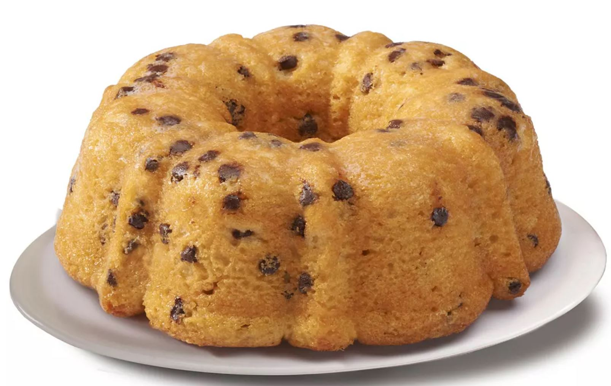
Ingredients
- \(4\) eggs
- \(1\) package Duncan Hines yellow cake mix
- \(1\) small instant vanilla pudding
- \(\frac{1}{2}\) cup vegetable oil
- \(1\) cup water
- \(\frac{1}{2}\) bar german chocolate (\(4\) oz)
- \(6\) oz semi-sweet chocolate chips
Directions
- Finely chop \(4\) oz german chocolate bar.
- Mix all ingredients thoroughly in a large bowl.
- Bake in a greased bundt pan at \(325^\circ F\) for \(1\) hour.
- Dust with powdered sugar.
Chicken Marsala
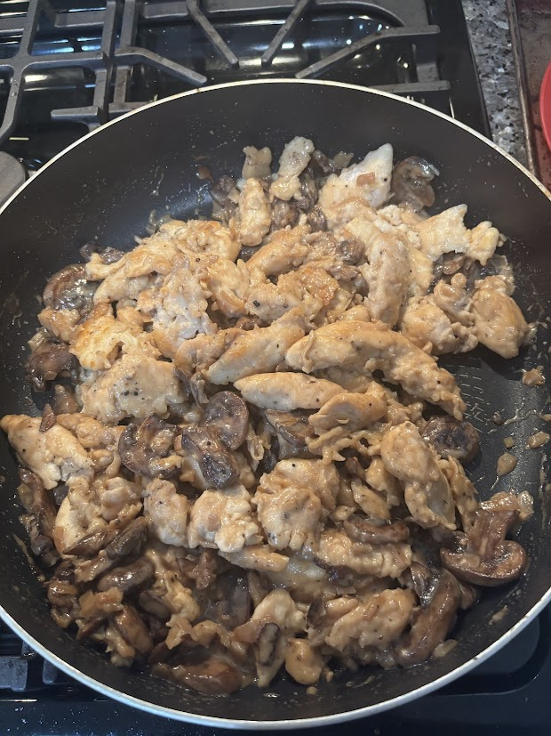
Ingredients
- \(1\) pkg penne pasta
- \(1 \frac{1}{2}\) lbs chicken tenderloin, tendon removed, cut into cubes
- \(3\) tbsp all-purpose flour
- salt & pepper
- \(1\) tbsp olive oil
- \(3\) tbsp unsalted butter, divided
- \(8\) oz pkg baby bella mushrooms, sliced
- \(1\) medium shallot, finely chopped
- \(2\) cloves garlic, minced
- \(\frac{2}{3}\) cup chicken broth
- \(\frac{2}{3}\) cup dry marsala wine
- \(\frac{2}{3}\) cup heavy cream
- \(2\) tsp chopped fresh thyme
Directions
- Cook pasta according to package instructions.
- Salt and pepper the chicken to taste. Lightly coat it with \(3\) tbsp flour
- Heat \(1\) tbsp of olive oil and \(2\) tablespoons of the butter in a large skillet over medium-high heat. Cook the chicken. Transfer it to a plate and set aside.
- Melt the remaining tablespoon of butter in the pan. Add the mushrooms and cook for 5 minutes.
- Add the chopped shallot, \(2\) cloves garlic, and salt; cook for 1 to 2 minutes more.
- Add the \(\frac{2}{3}\) cup chicken broth, Marsala wine, and heavy cream, \(2\) tsp thyme, and some salt and pepper.
- Scrape any brown bits from the pan into the liquid. Bring the liquid to a boil and gently boil for 15 minutes until thickened.
- Add cooked penne and chicken to the pan and fold into the Marsala sauce.
Cinnamon Rolls
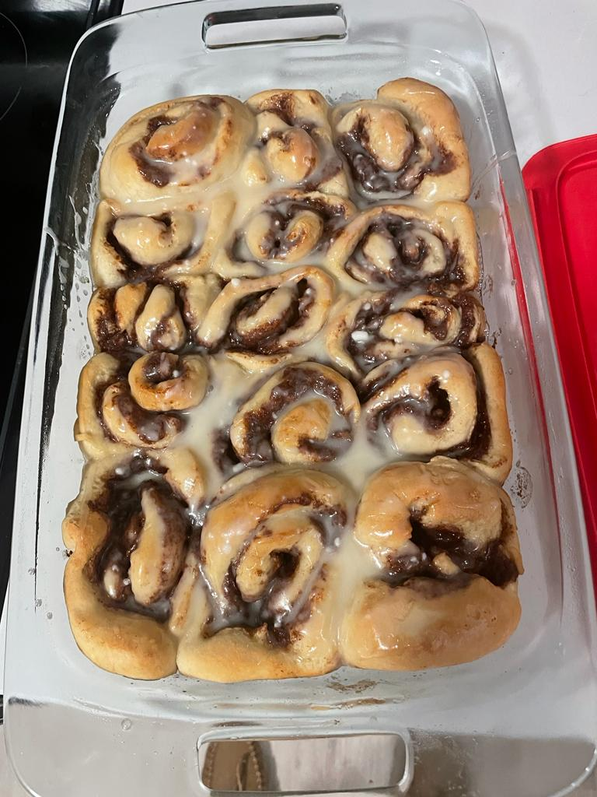
Ingredients
Dough
- \(1\) loaf frozen bread dough, thawed
Filling
- \(\frac{1}{2}\) cup light brown sugar
- \(\frac{1}{4}\) cup white sugar
- \(6\) tbsp butter
- \(2\) tbsp cinnamon
Cream Cheese Icing
- \(2\) oz Philadelphia cream cheese
- \(3\) tbsp butter
- \(3\) cups confectioners sugar (AKA powdered sugar)
- \(6\) tbsp milk
- \(\frac{3}{4}\) tsp vanilla extract
Note: This makes a lot of cream cheese icing.
Glaze Icing
- \(2\) cups confectioners sugar (AKA powdered sugar)
- \(4\) tbsp melted butter
- \(1\) tsp vanilla extract
- \(3-6\) tbsp hot water
Directions
- Thaw bread dough in refrigerator overnight (per instructions on package). Take it out of the refrigerator about an hour before using it so that it isn’t stiff.
- Roll dough into a flat rectangle.
- Combine filling ingredients in a large bowl, and spread evenly onto the flattened dough.
- Roll dough into a a cylinder and cut into \(1\)” pieces. I like to do this by repeatedly cutting the pieces in half until they are about the right size.
- Bake at \(350^\circ F\) for \(25\) minutes.
- Immediately after coming out of the oven, cover with icing of choice from above.
Crunchwraps
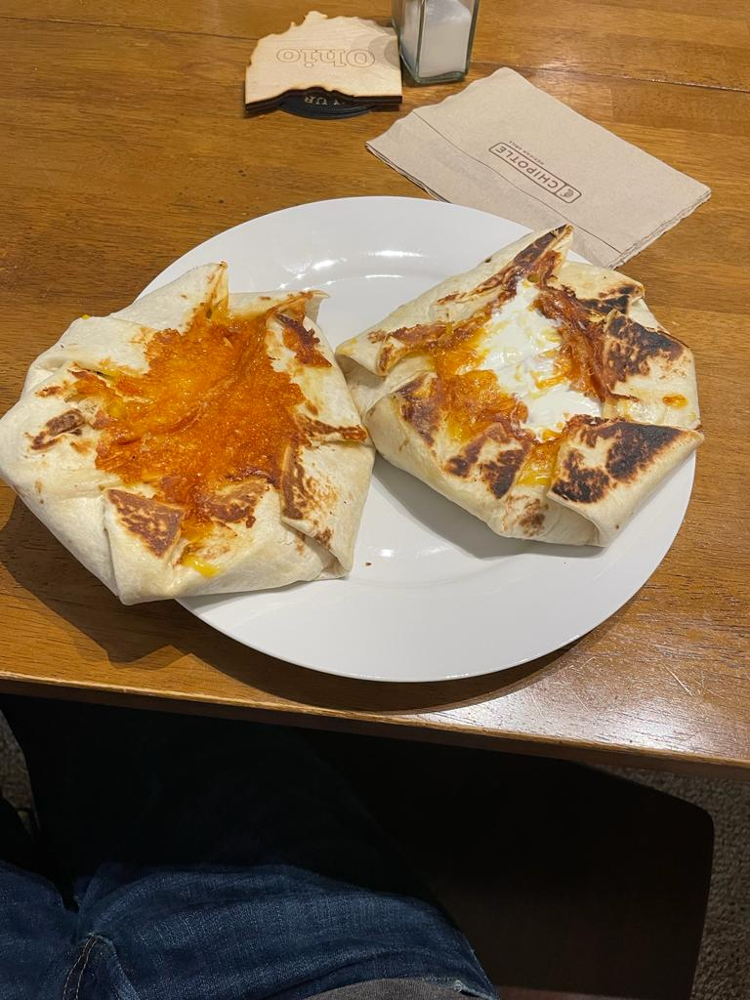
Ingredients
Note: The ingredients can vary. This recipe has the ingredients I’ve used most often.
- \(1\) lb ground beef
- \(1\) package taco seasoning (I like Taco Bell brand)
- \(12\)” flour tortillas
- shredded cheese
- canned nacho cheese
- tostadas
- sour cream
- diced tomatoes (I like to use Roma, since they’re cheapest per pound)
- taco sauce
Directions
- Cook ground beef in a skillet over medium heat. Add taco seasoning at the end (per packet instructions).
- Heat nacho cheese ina small saucepan.
- Place ground beef in the ceter of a warmed tortilla (I microwave the tortillas for \(30\) seconds to make them less likely to break).
- Add nacho cheese, taco sauce, sour cream, tomatoes then top with a tostada shell. Add shredded cheese. It is important that the shredded cheese is the last thing added, since it will be the glue that holds the crunchwrap together.
- Fold the edges of the tortilla up around the tostada and shredded cheese.
- Cook the crunchwrap seam-side down for \(3\) minutes. Then flip and cook an additional \(1\) minute.
Doughnuts
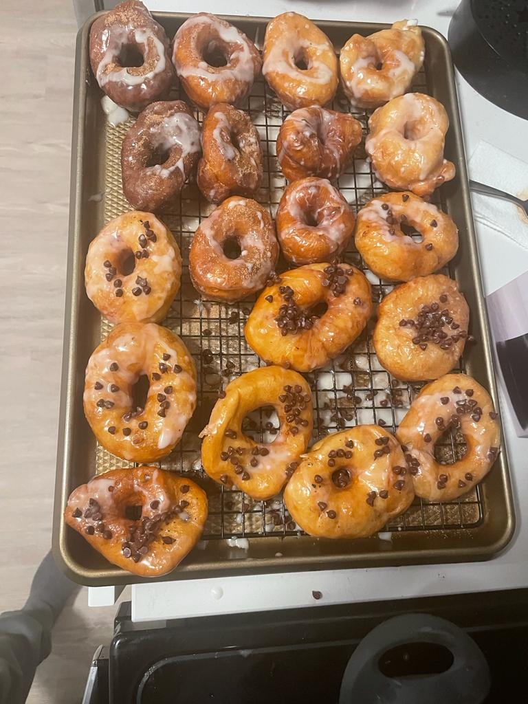
Ingredients
Dough
- \(1\) loaf frozen bread dough, thawed
- cinnamon sugar
Glaze
- \(2\) cups confectioners sugar (AKA powdered sugar)
- \(4\) tbsp melted butter
- \(1\) tsp vanilla extract
- \(3-6\) tbsp hot water
Directions
- Thaw bread dough in refrigerator overnight (per instructions on package). Take it out of the refrigerator about an hour before using it so that it isn’t stiff.
- Roll dough into a flat rectangle. Using a drinking glass, cut circles out of dough. Using the cap of a plastic disposable water bottle, cut out small holes in the middle of each doughnut.
- Roll scraps into a new flat rectangle and cut out more doughnuts until there is no dough left.
- Fill a pot with about \(2\) inches of vegetable oil and heat to \(350^\circ F\). If the oil is too hot, the doughnuts will burn. Cook doughnuts for \(1-2\) minutes per side, until golden brown. Cook in batches to avoid overcrowding the pot.
- Immediately after removing the doughnuts from the oil, dip in glaze, and add additional toppings of choice. I like to coat with cinnamon sugar.
Dumplings
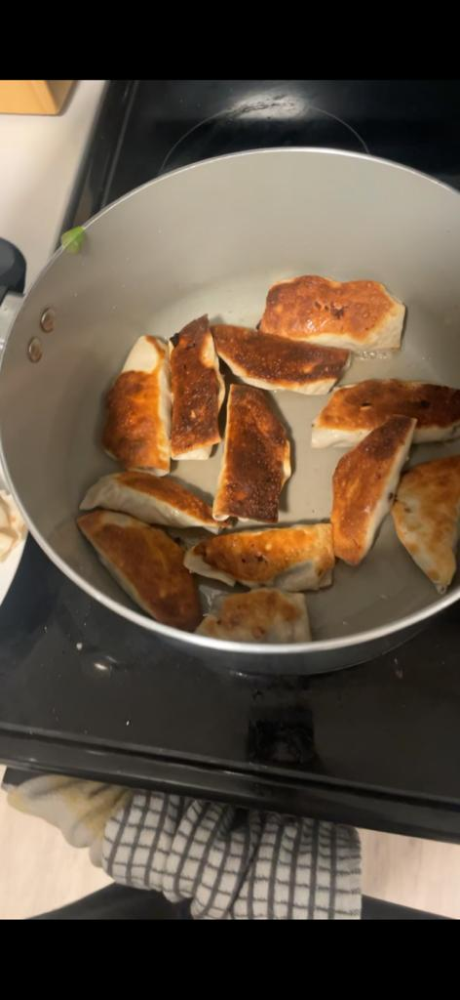
Ingredients
- \(1\) pkg refrigerated wonton wrappers (The frozen ones stick too much.)
- \(1\) lb ground pork (Don’t buy the kind that looks like ground beef; it’s much tougher)
- \(1\) green onion
- \(2\) garlic cloves, minced
- \(2\) tsp minced fresh ginger
- \(1\) tsp sesame oil
- \(2\) tsp salt
- \(\frac{1}{2}\) tsp black pepper
- small bowl of water for folding
- cooking oil
Directions
- In a large bowl, mix \(1\) lb ground pork, \(1\) green onion, \(2\) garlic cloves, \(2\) tsp ginger, \(1\) tsp sesame oil, \(2\) tsp salt, and \(\frac{1}{2}\) tsp black pepper.
- Get a small bowl of water.
- Separate all wonton wrappers and lay them in rows on the counter.
- Place \(1\) tsp of the pork mixture in the center of each wrapper.
- Wet a finger in the bowl of water and use it to dampen the outer edges of the wonton wrappers. Fold them corner to corner to form a triangle.
- Freeze if desired. They can be cooked from frozen or immediately after preparation.
- Cooking these is significantly easier in a nonstick pan.
- Heat a stainless steel pan until Leidenfrost. Add oil and turn the heat to medium low. Allow the pan to cool for about 90 seconds.
- In a single layer, add the potstickers and cook them for \(1\) - \(2\) minutes until the bottoms are crispy.
- Add \(1\) cup of water to the pan and cover immediately. Allow the potstickers to steam covered for \(6\) - \(8\) minutes until all water has evaporated.
- Remove from pan and serve.
Fisn ‘N’ Chips
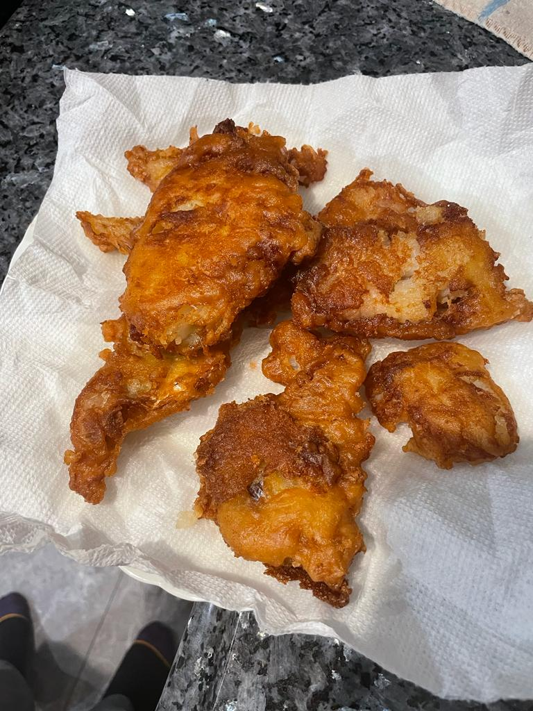
Ingredients
- \(1\) cup all-purpose flour, chilled
- \(1\) tsp baking powder
- \(1\) tsp salt
- \(1\frac{1}{4}\) cups VERY COLD light beer (I normally use Bud Light)
- \(1\frac{1}{2}\) lbs cod, haddock, or other white fish cut into strips (I normally use cod)
- oil for frying
Directions
- Combine \(1\) cup all-purpose flour and \(1\) tsp salt i a large bowl. Add \(1\frac{1}{4}\) cups VERY COLD light beer and whisk until smooth. Use the batter immediately.
- Blot strips of fish with paper towels to remove excess moisture. Coat each piece of fish with flour and thoroughly coat them with beer batter.
- Fill a pot with \(1\)” of oil and heat it to \(350^\circ F\).
- Fry the fish for about 3 minutes per side or until golden brown and crunchy.
Gyros
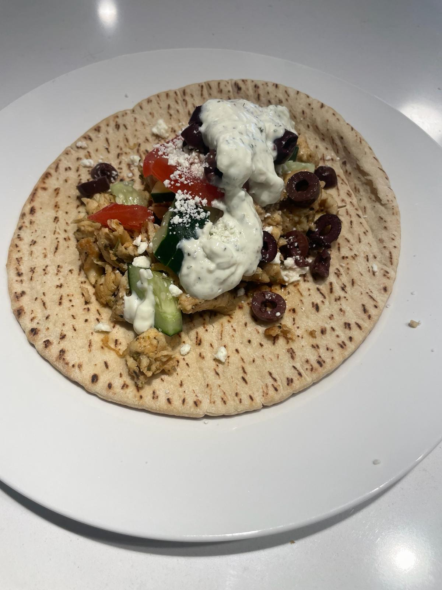
Ingredients
Meat
- \(8\) pieces pita
- \(2.5 - 3\) lbs chicken breast, cubed
Marinade
- \(1\) tbsp dried oregano
- \(1\) tbsp paprika
- \(2\) tsp black pepper
- \(1\) tbsp salt
- \(1\) tbsp rosemary, finely chopped
- \(5\) cloves chopped garlic
- \(2\) tbsp vegetable oil
Tzatziki Sauce
- \(2\) cups full-fat, plain greek yogurt (make sure it’s plain, not vanilla)
- \(\frac{1}{2}\) cucumber, grated (the other half will be used as a topping)
- \(\frac{1}{4}\) cup chopped parsley
- salt and pepper to taste
- \(3\) cloves of finely chopped garlic
- \(2\) tbsp olive oil
Toppings
- \(1\) red onion, sliced thinly
- \(\frac{1}{2}\) cucumber, chopped (the other half will be used in the sauce)
- \(2\) roma tomatoes, diced
- \(1\) container pitted kalamata olives
- \(1\) container feta cheese
Directions
- In a large bowl, combine marinade ingredients until a paste is formed
- Add cubed chicken to marinade (note: marination for any longer than \(30\) minutes isn’t necessary)
- In a stainless steel pan, cook chicken until it reaches an internal temperature of \(155 \degree F\)
- While the chicken cooks, combine the tzatziki sauce ingredients in a large bowl and stir to combine
- Assemble by warming pita in the microwave, adding chicken and toppings, and finishing wiht tzatziki sauce on top
Mommiyama
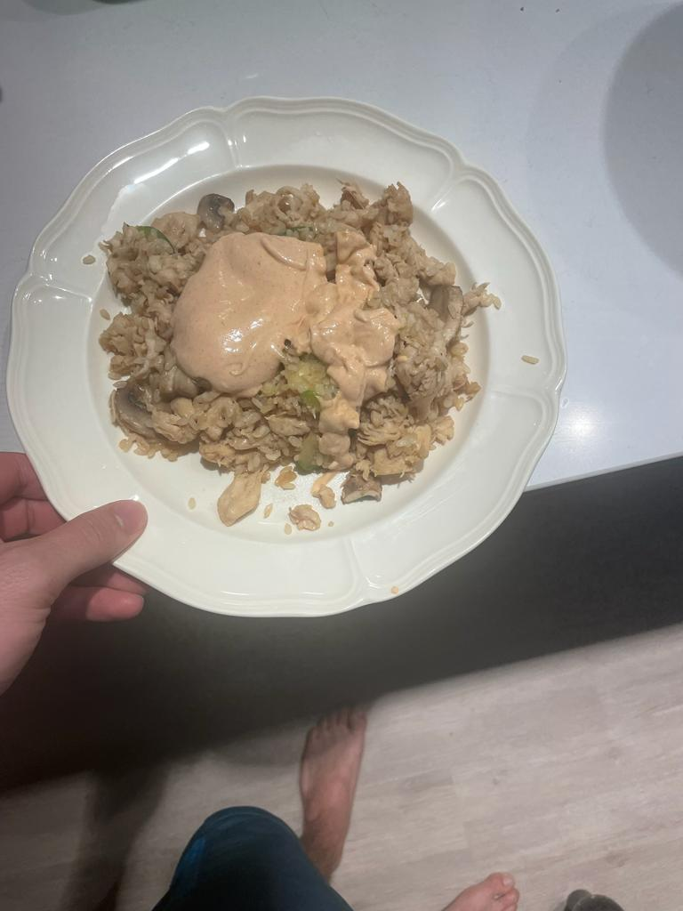
Ingredients
Yum Yum Sauce
Note: I normally double the yum yum sauce recipe.
- \(1 \frac{1}{4}\) cups mayonnaise
- \(\frac{1}{4}\) cup water
- \(1\) tbsp melted butter
- \(1\) tsp tomato paste
- \(1\) tsp white sugar
- \(\frac{1}{2}\) tsp garlic powder
- \(\frac{1}{4}\) tsp paprika
- \(1\) pinch cayenne pepper
Fried Rice
- \(1\) cup rice
- \(1\) lb chicken tenderloin (don’t use breasts or thighs)
- \(1\) large zucchini
- \(1\) container of white mushrooms
- Soy sauce to taste
Directions
Orange Chicken
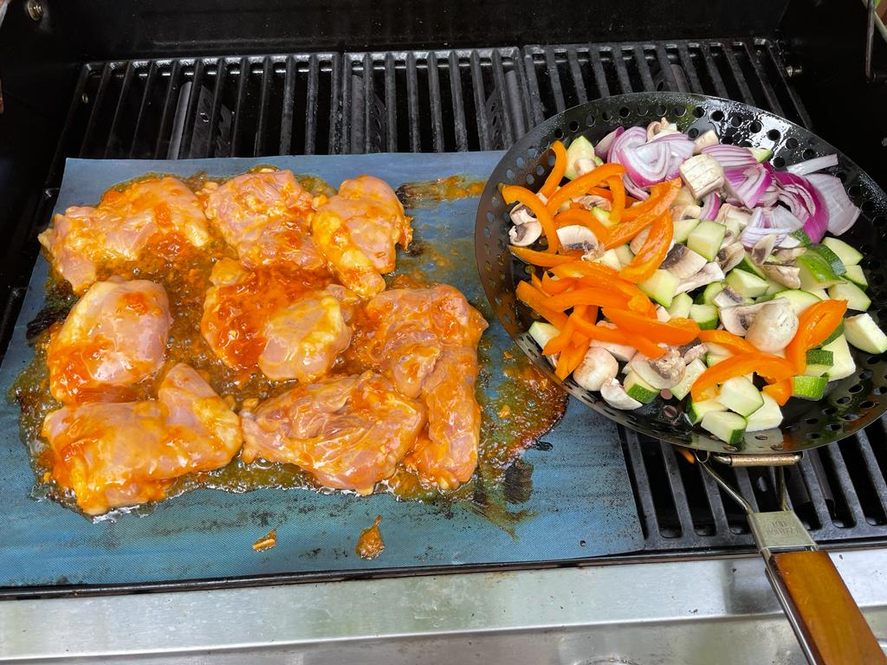
Ingredients
Directions
Philly Cheesesteaks
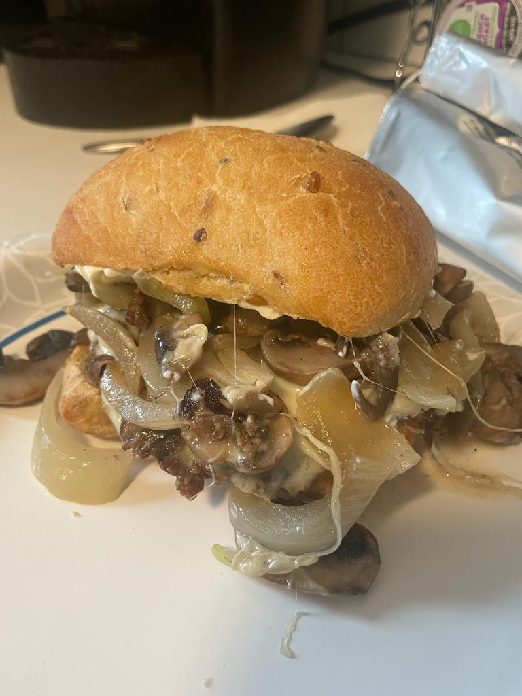
Ingredients
- \(1\) pkg Stehouwer’s Beef Sizzlers (\(16\) oz)
- cheese (either provolone slices or Cheez Whiz)
- \(1\) sweet onion
- \(1\) pkg mushrooms
- \(6\) sturdy rolls (I like to use ciabatta)
- mayonnaise
Directions
- Cook beef sizzlers according to package instructions. If using provolone cheese, add once slice to each sizzler \(30\) seconds before it is done cooking.
- Cook onions and mushrooms until tender. If using Cheez Whiz, add \(2\) tbsp of Cheez Whiz to the onions and mushrooms after they are done cooking.
- Toast ciabatta roll. Add mayo, top with a beef sizzler, and add onions and mushrooms.
Pizza
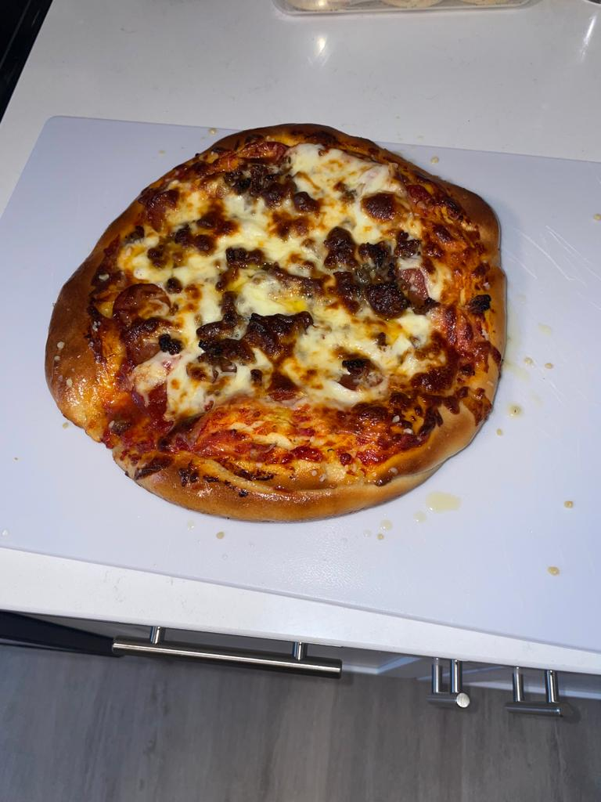
Ingredients
Note: I often change the toppings. This recipe is for a pepperoni pizza.
- \(1\) loaf frozen bread dough, thawed
- \(2\) tbsp butter
- \(1\) clove garlic, minced
- 1 can of crushed tomatoes. Get the smallest can you can find. I normally get 15 oz, and that is too much for \(1\) pizza.
- \(3\) tbsp sugar
- \(8\) oz fresh mozzarella, sliced thick
- \(8\) oz pepperoni. I like to buy a stick and cut the pepperonis thick. That way they curl and get crispy in the oven.
Directions
- Thaw bread dough in refrigerator overnight (per instructions on package). Take it out of the refrigerator about an hour before using it so that it isn’t stiff.
- Spray a \(10\)” cast iron skillet with cooking spray and form the dough to the shape of the skillet.
- To make pizza sauce add \(3\) tbsp sugar to the can of crushed tomatoes.
- Spread sauce on dough, add mozzarella slices and pepperoni.
- Bake at \(500^\circ F\) for 15 minutes. Then broil on high for 2 minutes until cheese is golden brown and pepperonis are crispy.
- Add garlic and \(2\) tbsp butter to a bowl and melt in the microwave. Spread the garlic butter on the pizza crust.
Stromboli
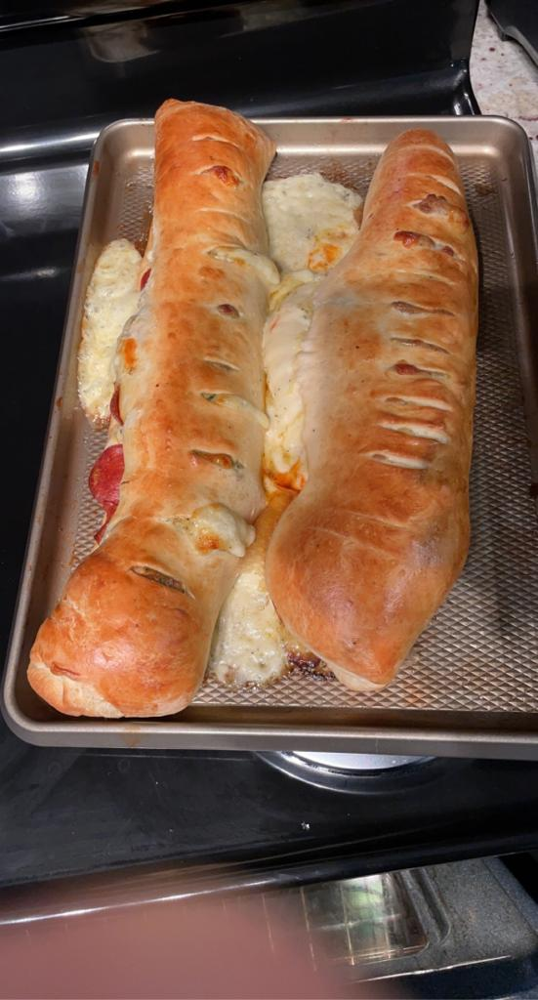
Ingredients
Note: This makes one roll of Stromboli. I normally double the recipe and make 2.
- \(1\) loaf frozen bread dough, thawed
- \(8\) oz pepperoni
- \(6\) oz mozzarella cheese slices
- \(3\) oz provolone cheese slices
- \(1\) tbsp Parmesan cheese
- \(2\) eggs (separate yolks from whites)
- \(\frac{1}{2}\) tsp garlic powder
- \(1\) tsp oregano (I normally use Italian seasoning, which has oregano)
- \(\frac{1}{2}\) tsp pepper
- \(2\) tbsp cooking oil
- \(1\) tsp parsley (dried from spice aisle)
- marinara sauce for dipping
Directions
- Thaw bread dough in refrigerator overnight (per instructions on package). Take it out of the refrigerator about an hour before using it so that it isn’t stiff.
- Roll bread dough into \(12\)” by \(18\)” rectangle. Line a baking sheet with parchment paper so the bottom of the Stromboli doesn’t burn.
- In a bowl, combine \(2\) egg yolks, \(1\) tbsp Parmesan cheese, \(\frac{1}{2}\) tsp garlic powder, \(1\) tsp oregano, \(\frac{1}{2}\) tsp pepper, \(1\) tsp parsley, \(2\) tbsp cooking oil.
- Spread the spice and egg mixture (from previous step) onto the \(12\)” by \(18\)” rectangle of dough. Cover with \(3\) oz provolone cheese slices, \(6\) oz mozzarella cheese slices, and \(8\) oz pepperoni.
- Roll into a cylinder and brush exterior with egg whites. Cut slits in the top of the rolled cylinder and top with oregano.
- Bake seam side down at \(350^{\circ}F\) for \(30\) minutes.
Tuscan Shrimp Pasta
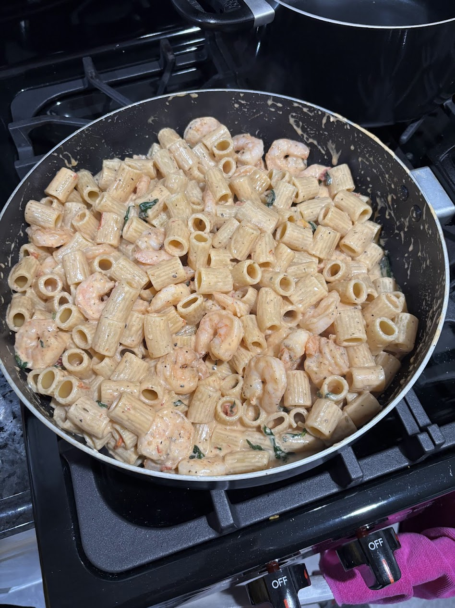
Ingredients
- \(1\) pkg rigatoni pasta
- \(1\) tbsp olive oil
- \(1\) tbsp unsalted butter
- \(1\) lb shrimp, peeled and deveined
- salt & pepper
- \(1\) tsp garlic powder
- \(1\) tsp paprika
- \(4\) garlic cloves, minced
- \(3.5\) oz finely chopped sundried tomatoes, drained
- \(1\) tsp italian seasoning
- \(1\) tbsp flour
- \(\frac{3}{4}\) cup chicken broth
- \(1\) cup heavy cream
- \(1\) tbsp tomato paste
- \(1\) tbsp lemon juice
- \(\frac{1}{4}\) cup chopped basil leaves
- \(\frac{1}{2}\) cup freshly grated Parmesan
Directions
- In a bowl, combine shrimp with \(1\) tsp paprika, \(1\) tsp garlic powder, salt and teaspoon pepper to taste. Set aside.
- Mince the \(4\) garlic cloves, grate the \(\frac{1}{2}\) cup Parmesan, chop the \(3.5\) oz sundried tomatoes, and chop the \(\frac{1}{4}\) cup basil leaves.
- Boil the rigatoni according to the package directions.
- In the meantime, heat \(1\) tbsp olive oil and \(1\) tbsp butter over medium high in a large skillet. Place shrimp in a single layer, and sear for 1 minute per side. Remove from skillet into a clean bowl.
- Add garlic and saute for 1 minute over medium low. Then add \(3.5\) oz sundried tomatoes and \(1\) tsp italian seasoning. Cook for 1 minute more. Add \(1\) tbsp flour, stir until incorporated. Deglaze with \(\frac{3}{4}\) cup chicken broth, simmer for 2 minutes while scraping up the brown bits on the bottom of your skillet with a wooden spoon.
- Pour in \(1\) cup heavy cream and stir in \(1\) tbsp tomato paste, bring to a boil. Allow the sauce to simmer for 3 minutes or until the pasta finishes cooking. Next, add \(1\) tbsp lemon juice and \(\frac{1}{4}\) cup chopped basil leaves. Finally stir in \(\frac{1}{2}\) cup freshly grated Parmesan
- Toss with pasta and shrimp. Finish off with chili flakes. Enjoy!